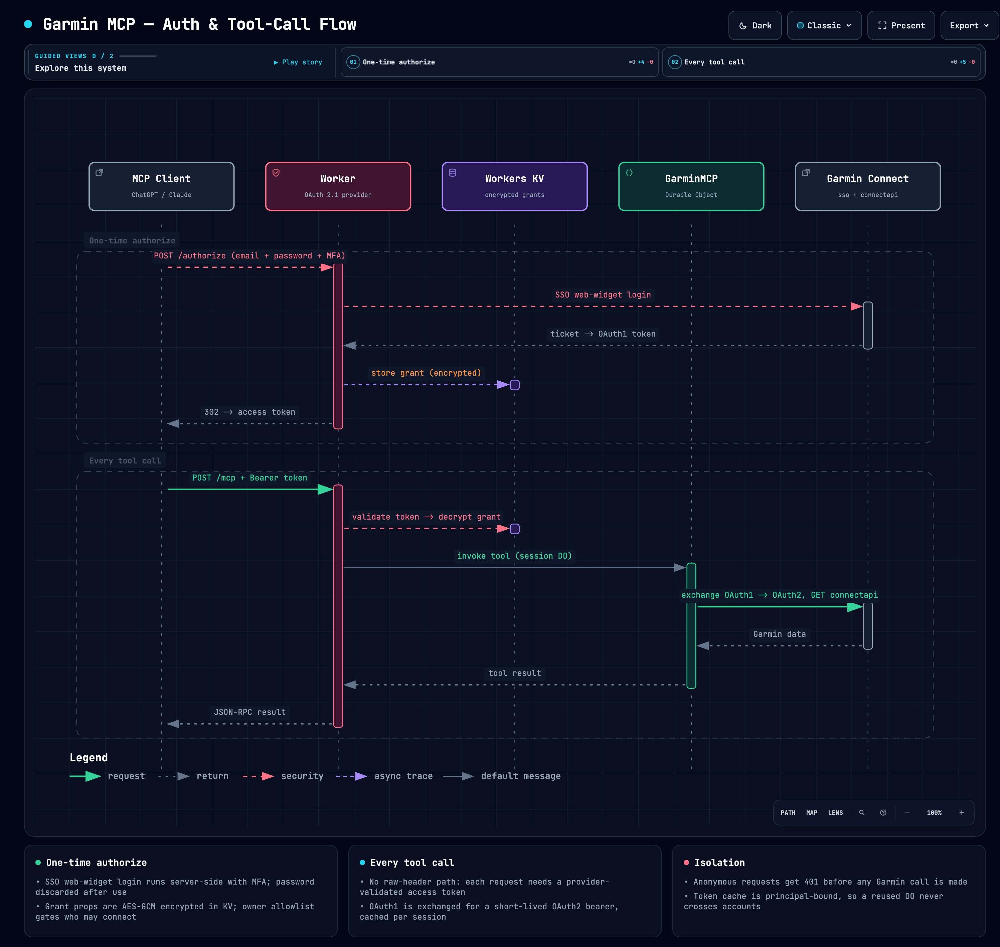

A remote MCP server that exposes your Garmin Connect data — activities, sleep, heart rate, training metrics, workouts, nutrition — to AI clients like Claude and ChatGPT. Runs on the Cloudflare Workers free tier. A TypeScript port of taxuspt/garmin_mcp.
One remote endpoint your AI client talks to; it relays to Garmin on your behalf.
Garmin offers no public API for personal data, so this server speaks Garmin Connect's internal API — the same one the mobile app uses — through a hardened, single-purpose Cloudflare Worker. You authenticate once in the browser; the server exchanges your long-lived Garmin token for short-lived bearers on each call and returns clean JSON to the model.
The one-time authorize flow and the per-request tool call, end to end.

Open interactive diagram ↗The interactive version has light/dark, pan/zoom, search, and guided views.
143 tools across nine modules, plus 5 workout-template resources. Full parity with the Python original, adapted for a serverless host. 98 tools declare typed output schemas and return structured content.
garmin_get, a raw GET escape hatch.Cloudflare Workers free tier. Roughly ten minutes.
git clone https://github.com/rohankmr414/garmin-mcp
cd garmin-mcp
npm install
# 1. create the KV namespace, paste the id into wrangler.jsonc
npx wrangler kv namespace create OAUTH_KV
# 2. deploy
npx wrangler deploy
# 3. lock it to your Garmin account (displayName from get_user_profile)
npx wrangler secret put OWNER_GARMIN_IDSSet OWNER_GARMIN_IDS to a comma-separated allowlist of Garmin displayNames. Leave it empty to allow any Garmin account.
Add the server URL; the browser walks you through a one-time Garmin login.
claude mcp add garmin --transport http \
https://garmin-mcp.<your-subdomain>.workers.dev/mcpSettings → Connectors → Create. Enter the same /mcp URL, choose OAuth authentication, and leave scopes empty. ChatGPT registers itself and opens the authorize page.
Settings → Connectors → Add custom connector, with the same URL.
On the authorize page you enter your Garmin email, password, and MFA code (or paste a token). Credentials are used once to log in, then discarded — only the resulting token is stored, encrypted.
401 before any Garmin call.